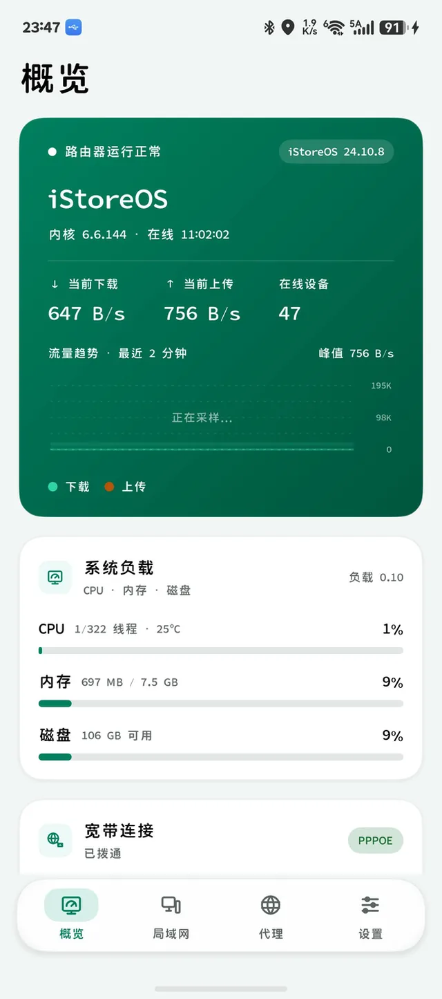

路由器上发生的事，
手机上就能看清。See what your router
is actually doing.
实时速率、设备清单、应用流量识别、代理切换、DNS 拦截日志 —— 不用开电脑，也不用记 LuCI 的路径。 Live throughput, device list, per-app traffic, proxy switching and DNS block logs — no laptop, no LuCI digging.
Android

下载 APKDownload APK
扫码或点按，约 2.7 MBScan or tap · 2.7 MB
HarmonyOS
前往应用市场Open AppGallery
仅鸿蒙手机可扫HarmonyOS devices only
界面Screens



能做什么Features
实时速率Live throughput
上下行与每个网口的速率，5 秒刷新Up/down and per-port rates, refreshed every 5s
设备清单Devices
在线状态、IP、MAC，可看单机流量Online state, IP, MAC, per-device traffic
应用识别App traffic
按特征库识别应用，标出识别来源App-level traffic with match source labels
代理切换Proxy
OpenClash / Passwall 启停与节点选择Start/stop and pick nodes for OpenClash or Passwall
拦截日志Block logs
DNS 查询与拦截记录，可只看被拦的DNS queries and blocks, filter to blocked only
远程访问Remote access
填域名或 IPv6，在外网也能连回家Connect home over IPv6 or a domain
运行条件Requirements
- 路由器：iStoreOS 24.10.8 及以上（x86_64 / ARM64 / ARMv7） Router: iStoreOS 24.10.8 or newer (x86_64 / ARM64 / ARMv7)
- 路由器端需安装
luci-app-istore-agent，可在 Release 里下载 .ipk 或 .run Installluci-app-istore-agenton the router — grab the .ipk or .run from Releases - 手机与路由器需在同一局域网，或通过 IPv6 / 域名远程连接 Phone and router on the same LAN, or reachable over IPv6 / a domain